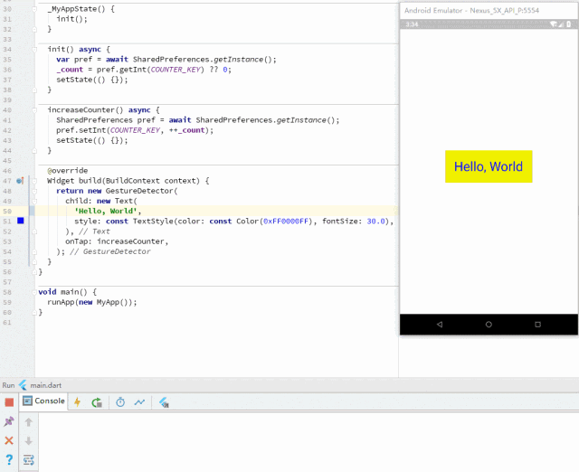
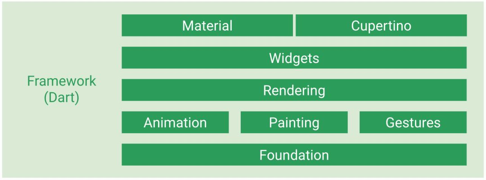

Flutter的原理及美团的实践

总第272篇
2018年 第64篇
导读
Flutter是Google开发的一套全新的跨平台、开源UI框架，支持iOS、Android系统开发，并且是未来新操作系统Fuchsia的默认开发套件。自从2017年5月发布第一个版本以来，目前Flutter已经发布了近60个版本，并且在2018年5月发布了第一个“Ready for Production Apps”的Beta 3版本，6月20日发布了第一个“Release Preview”版本。
初识Flutter
Flutter的目标是使同一套代码同时运行在Android和iOS系统上，并且拥有媲美原生应用的性能，Flutter甚至提供了两套控件来适配Android和iOS（滚动效果、字体和控件图标等等），为了让App在细节处看起来更像原生应用。
在Flutter诞生之前，已经有许多跨平台UI框架的方案，比如基于WebView的Cordova、AppCan等，还有使用HTML+JavaScript渲染成原生控件的React Native、Weex等。
基于WebView的框架优点很明显，它们几乎可以完全继承现代Web开发的所有成果（丰富得多的控件库、满足各种需求的页面框架、完全的动态化、自动化测试工具等等），当然也包括Web开发人员，不需要太多的学习和迁移成本就可以开发一个App。同时WebView框架也有一个致命（在对体验&性能有较高要求的情况下）的缺点，那就是WebView的渲染效率和JavaScript执行性能太差。再加上Android各个系统版本和设备厂商的定制，很难保证所在所有设备上都能提供一致的体验。
为了解决WebView性能差的问题，以React Native为代表的一类框架将最终渲染工作交还给了系统，虽然同样使用类HTML+JS的UI构建逻辑，但是最终会生成对应的自定义原生控件，以充分利用原生控件相对于WebView的较高的绘制效率。与此同时这种策略也将框架本身和App开发者绑在了系统的控件系统上，不仅框架本身需要处理大量平台相关的逻辑，随着系统版本变化和API的变化，开发者可能也需要处理不同平台的差异，甚至有些特性只能在部分平台上实现，这样框架的跨平台特性就会大打折扣。
Flutter则开辟了一种全新的思路，从头到尾重写一套跨平台的UI框架，包括UI控件、渲染逻辑甚至开发语言。渲染引擎依靠跨平台的Skia图形库来实现，依赖系统的只有图形绘制相关的接口，可以在最大程度上保证不同平台、不同设备的体验一致性，逻辑处理使用支持AOT的Dart语言，执行效率也比JavaScript高得多。
Flutter同时支持Windows、Linux和macOS操作系统作为开发环境，并且在Android Studio和VS Code两个IDE上都提供了全功能的支持。Flutter所使用的Dart语言同时支持AOT和JIT运行方式，JIT模式下还有一个备受欢迎的开发利器“热刷新”（Hot Reload），即在Android Studio中编辑Dart代码后，只需要点击保存或者“Hot Reload”按钮，就可以立即更新到正在运行的设备上，不需要重新编译App，甚至不需要重启App，立即就可以看到更新后的样式。
在Flutter中，所有功能都可以通过组合多个Widget来实现，包括对齐方式、按行排列、按列排列、网格排列甚至事件处理等等。Flutter控件主要分为两大类，StatelessWidget和StatefulWidget，StatelessWidget用来展示静态的文本或者图片，如果控件需要根据外部数据或者用户操作来改变的话，就需要使用StatefulWidget。State的概念也是来源于Facebook的流行Web框架React，React风格的框架中使用控件树和各自的状态来构建界面，当某个控件的状态发生变化时由框架负责对比前后状态差异并且采取最小代价来更新渲染结果。
Hot Reload
在Dart代码文件中修改字符串“Hello, World”，添加一个惊叹号，点击保存或者热刷新按钮就可以立即更新到界面上，仅需几百毫秒：

Flutter通过将新的代码注入到正在运行的DartVM中，来实现Hot Reload这种神奇的效果，在DartVM将程序中的类结构更新完成后，Flutter会立即重建整个控件树，从而更新界面。但是热刷新也有一些限制，并不是所有的代码改动都可以通过热刷新来更新：
编译错误，如果修改后的Dart代码无法通过编译，Flutter会在控制台报错，这时需要修改对应的代码。
控件类型从
StatelessWidget到StatefulWidget的转换，因为Flutter在执行热刷新时会保留程序原来的state，而某个控件从stageless→stateful后会导致Flutter重新创建控件时报错“myWidget is not a subtype of StatelessWidget”，而从stateful→stateless会报错“type 'myWidget' is not a subtype of type 'StatefulWidget' of 'newWidget'”。全局变量和静态成员变量，这些变量不会在热刷新时更新。
修改了main函数中创建的根控件节点，Flutter在热刷新后只会根据原来的根节点重新创建控件树，不会修改根节点。
某个类从普通类型转换成枚举类型，或者类型的泛型参数列表变化，都会使热刷新失败。
热刷新无法实现更新时，执行一次热重启（Hot Restart）就可以全量更新所有代码，同样不需要重启App，区别是restart会将所有Dart代码打包同步到设备上，并且所有状态都会重置。
Flutter插件
Flutter使用的Dart语言无法直接调用Android系统提供的Java接口，这时就需要使用插件来实现中转。Flutter官方提供了丰富的原生接口封装：
android_alarm_manager，访问Android系统的
AlertManager。android_intent，构造Android的Intent对象。
battery，获取和监听系统电量变化。
connectivity，获取和监听系统网络连接状态。
device info，获取设备型号等信息。
image_picker，从设备中选取或者拍摄照片。
package_info，获取App安装包的版本等信息。
path_provider，获取常用文件路径。
quick_actions，App图标添加快捷方式，iOS的eponymous concept和Android的App Shortcuts。
sensors，访问设备的加速度和陀螺仪传感器。
shared_preferences，App KV存储功能。
url_launcher，启动URL，包括打电话、发短信和浏览网页等功能。
video_player，播放视频文件或者网络流的控件。
在Flutter中，依赖包由Pub仓库管理，项目依赖配置在pubspec.yaml文件中声明即可（类似于NPM的版本声明Pub Versioning Philosophy），对于未发布在Pub仓库的插件可以使用git仓库地址或文件路径：
dependencies:
url_launcher: ">=0.1.2 <0.2.0"
collection: "^0.1.2"
plugin1:
git:
url: "git://github.com/flutter/plugin1.git"
plugin2:
path: ../plugin2/
以shared_preferences为例，在pubspec中添加代码：
dependencies:
flutter:
sdk: flutter
shared_preferences: "^0.4.1"
脱字号“^”开头的版本表示和当前版本接口保持兼容的最新版，^1.2.3 等效于 >=1.2.3 <2.0.0 而 ^0.1.2 等效于 >=0.1.2 <0.2.0，添加依赖后点击“Packages get”按钮即可下载插件到本地，在代码中添加import语句就可以使用插件提供的接口：
import 'package:shared_preferences/shared_preferences.Dart';
class _MyAppState extends State<MyAppCounter> {
int _count = 0;
static const String COUNTER_KEY = 'counter';
_MyAppState() {
init();
}
init() async {
var pref = await SharedPreferences.getInstance();
_count = pref.getInt(COUNTER_KEY) ?? 0;
setState(() {});
}
increaseCounter() async {
SharedPreferences pref = await SharedPreferences.getInstance();
pref.setInt(COUNTER_KEY, ++_count);
setState(() {});
}
...
Dart
Dart是一种强类型、跨平台的客户端开发语言。具有专门为客户端优化、高生产力、快速高效、可移植（兼容ARM/x86）、易学的OO编程风格和原生支持响应式编程（Stream & Future）等优秀特性。Dart主要由Google负责开发和维护，在2011年10启动项目，2017年9月发布第一个2.0-dev版本。
Dart本身提供了三种运行方式：
使用Dart2js编译成JavaScript代码，运行在常规浏览器中（Dart Web）。
使用DartVM直接在命令行中运行Dart代码（DartVM）。
AOT方式编译成机器码，例如Flutter App框架（Flutter）。
Flutter在筛选了20多种语言后，最终选择Dart作为开发语言主要有几个原因：
健全的类型系统，同时支持静态类型检查和运行时类型检查。
代码体积优化（Tree Shaking），编译时只保留运行时需要调用的代码（不允许反射这样的隐式引用），所以庞大的Widgets库不会造成发布体积过大。
丰富的底层库，Dart自身提供了非常多的库。
多生代无锁垃圾回收器，专门为UI框架中常见的大量Widgets对象创建和销毁优化。
跨平台，iOS和Android共用一套代码。
JIT & AOT运行模式，支持开发时的快速迭代和正式发布后最大程度发挥硬件性能。
在Dart中，有一些重要的基本概念需要了解：
所有变量的值都是对象，也就是类的实例。甚至数字、函数和
null也都是对象，都继承自Object类。虽然Dart是强类型语言，但是显式变量类型声明是可选的，Dart支持类型推断。如果不想使用类型推断，可以用dynamic类型。
Dart支持泛型，
List表示包含int类型的列表，List则表示包含任意类型的列表。Dart支持顶层（top-level）函数和类成员函数，也支持嵌套函数和本地函数。
Dart支持顶层变量和类成员变量。
Dart没有public、protected和private这些关键字，使用下划线“_”开头的变量或者函数，表示只在库内可见。参考库和可见性。
DartVM的内存分配策略非常简单，创建对象时只需要在现有堆上移动指针，内存增长始终是线形的，省去了查找可用内存段的过程：

Dart中类似线程的概念叫做Isolate，每个Isolate之间是无法共享内存的，所以这种分配策略可以让Dart实现无锁的快速分配。
Dart的垃圾回收也采用了多生代算法，新生代在回收内存时采用了“半空间”算法，触发垃圾回收时Dart会将当前半空间中的“活跃”对象拷贝到备用空间，然后整体释放当前空间的所有内存：

整个过程中Dart只需要操作少量的“活跃”对象，大量的没有引用的“死亡”对象则被忽略，这种算法也非常适合Flutter框架中大量Widget重建的场景。
Flutter Framework
Flutter的框架部分完全使用Dart语言实现，并且有着清晰的分层架构。分层架构使得我们可以在调用Flutter提供的便捷开发功能（预定义的一套高质量Material控件）之外，还可以直接调用甚至修改每一层实现（因为整个框架都属于“用户空间”的代码），这给我们提供了最大程度的自定义能力。Framework底层是Flutter引擎，引擎主要负责图形绘制（Skia）、文字排版（libtxt）和提供Dart运行时，引擎全部使用C++实现，Framework层使我们可以用Dart语言调用引擎的强大能力。
分层架构

Framework的最底层叫做Foundation，其中定义的大都是非常基础的、提供给其他所有层使用的工具类和方法。绘制库（Painting）封装了Flutter Engine提供的绘制接口，主要是为了在绘制控件等固定样式的图形时提供更直观、更方便的接口，比如绘制缩放后的位图、绘制文本、插值生成阴影以及在盒子周围绘制边框等等。
Animation是动画相关的类，提供了类似Android系统的ValueAnimator的功能，并且提供了丰富的内置插值器。Gesture提供了手势识别相关的功能，包括触摸事件类定义和多种内置的手势识别器。GestureBinding类是Flutter中处理手势的抽象服务类，继承自BindingBase类。
Binding系列的类在Flutter中充当着类似于Android中的SystemService系列（ActivityManager、PackageManager）功能，每个Binding类都提供一个服务的单例对象，App最顶层的Binding会包含所有相关的Bingding抽象类。如果使用Flutter提供的控件进行开发，则需要使用WidgetsFlutterBinding，如果不使用Flutter提供的任何控件，而直接调用Render层，则需要使用RenderingFlutterBinding。
Flutter本身支持Android和iOS两个平台，除了性能和开发语言上的“native”化之外，它还提供了两套设计语言的控件实现Material & Cupertino，可以帮助App更好地在不同平台上提供原生的用户体验。
渲染库（Rendering）
Flutter的控件树在实际显示时会转换成对应的渲染对象（RenderObject）树来实现布局和绘制操作。一般情况下，我们只会在调试布局，或者需要使用自定义控件来实现某些特殊效果的时候，才需要考虑渲染对象树的细节。渲染库主要提供的功能类有：
abstract class RendererBinding extends BindingBase with ServicesBinding, SchedulerBinding, HitTestable { ... }
abstract class RenderObject extends AbstractNode with DiagnosticableTreeMixin implements HitTestTarget {
abstract class RenderBox extends RenderObject { ... }
class RenderParagraph extends RenderBox { ... }
class RenderImage extends RenderBox { ... }
class RenderFlex extends RenderBox with ContainerRenderObjectMixin<RenderBox, FlexParentData>,
RenderBoxContainerDefaultsMixin<RenderBox, FlexParentData>,
DebugOverflowIndicatorMixin { ... }
RendererBinding是渲染树和Flutter引擎的胶水层，负责管理帧重绘、窗口尺寸和渲染相关参数变化的监听。RenderObject渲染树中所有节点的基类，定义了布局、绘制和合成相关的接口。RenderBox和其三个常用的子类RenderParagraph、RenderImage、RenderFlex则是具体布局和绘制逻辑的实现类。
在Flutter界面渲染过程分为三个阶段：布局、绘制、合成，布局和绘制在Flutter框架中完成，合成则交由引擎负责：

控件树中的每个控件通过实现RenderObjectWidget#createRenderObject(BuildContext context) → RenderObject方法来创建对应的不同类型的RenderObject对象，组成渲染对象树。因为Flutter极大地简化了布局的逻辑，所以整个布局过程中只需要深度遍历一次：

渲染对象树中的每个对象都会在布局过程中接受父对象的Constraints参数，决定自己的大小，然后父对象就可以按照自己的逻辑决定各个子对象的位置，完成布局过程。
子对象不存储自己在容器中的位置，所以在它的位置发生改变时并不需要重新布局或者绘制。子对象的位置信息存储在它自己的parentData字段中，但是该字段由它的父对象负责维护，自身并不关心该字段的内容。同时也因为这种简单的布局逻辑，Flutter可以在某些节点设置布局边界（Relayout boundary），即当边界内的任何对象发生重新布局时，不会影响边界外的对象，反之亦然：

布局完成后，渲染对象树中的每个节点都有了明确的尺寸和位置，Flutter会把所有对象绘制到不同的图层上：

因为绘制节点时也是深度遍历，可以看到第二个节点在绘制它的背景和前景不得不绘制在不同的图层上，因为第四个节点切换了图层（因为“4”节点是一个需要独占一个图层的内容，比如视频），而第六个节点也一起绘制到了红色图层。这样会导致第二个节点的前景（也就是“5”）部分需要重绘时，和它在逻辑上毫不相干但是处于同一图层的第六个节点也必须重绘。为了避免这种情况，Flutter提供了另外一个“重绘边界”的概念：

在进入和走出重绘边界时，Flutter会强制切换新的图层，这样就可以避免边界内外的互相影响。典型的应用场景就是ScrollView，当滚动内容重绘时，一般情况下其他内容是不需要重绘的。虽然重绘边界可以在任何节点手动设置，但是一般不需要我们来实现，Flutter提供的控件默认会在需要设置的地方自动设置。
控件库（Widgets）
Flutter的控件库提供了非常丰富的控件，包括最基本的文本、图片、容器、输入框和动画等等。在Flutter中“一切皆是控件”，通过组合、嵌套不同类型的控件，就可以构建出任意功能、任意复杂度的界面。它包含的最主要的几个类有：
class WidgetsFlutterBinding extends BindingBase with GestureBinding, ServicesBinding, SchedulerBinding,
PaintingBinding, RendererBinding, WidgetsBinding { ... }
abstract class Widget extends DiagnosticableTree { ... }
abstract class StatelessWidget extends Widget { ... }
abstract class StatefulWidget extends Widget { ... }
abstract class RenderObjectWidget extends Widget { ... }
abstract class Element extends DiagnosticableTree implements BuildContext { ... }
class StatelessElement extends ComponentElement { ... }
class StatefulElement extends ComponentElement { ... }
abstract class RenderObjectElement extends Element { ... }
...
基于Flutter控件系统开发的程序都需要使用WidgetsFlutterBinding，它是Flutter的控件框架和Flutter引擎的胶水层。Widget就是所有控件的基类，它本身所有的属性都是只读的。RenderObjectWidget所有的实现类则负责提供配置信息并创建具体的RenderObjectElement。Element是Flutter用来分离控件树和真正的渲染对象的中间层，控件用来描述对应的element属性，控件重建后可能会复用同一个element。RenderObjectElement持有真正负责布局、绘制和碰撞测试（hit test）的RenderObject对象。
StatelessWidget和StatefulWidget并不会直接影响RenderObject创建，只负责创建对应的RenderObjectWidgetStatelessElement和StatefulElement也是类似的功能。
它们之间的关系如下图：

如果控件的属性发生了变化（因为控件的属性是只读的，所以变化也就意味着重新创建了新的控件树），但是其树上每个节点的类型没有变化时，element树和render树可以完全重用原来的对象（因为element和render object的属性都是可变的）：

但是，如果控件树种某个节点的类型发生了变化，则element树和render树中的对应节点也需要重新创建：

外卖全品类页面实践
在调研了Flutter的各项特性和实现原理之后，外卖计划灰度上线Flutter版的全品类页面。对于将Flutter页面作为App的一部分这种集成模式，官方并没有提供完善的支持，所以我们首先需要了解Flutter是如何编译、打包并且运行起来的。
Flutter App构建过程
最简单的Flutter工程至少包含两个文件：

运行Flutter程序时需要对应平台的宿主工程，在Android上Flutter通过自动创建一个Gradle项目来生成宿主，在项目目录下执行flutter create .，Flutter会创建ios和android两个目录，分别构建对应平台的宿主项目，Android目录内容如下：

此Gradle项目中只有一个app module，构建产物即是宿主APK。Flutter在本地运行时默认采用Debug模式，在项目目录执行flutter run即可安装到设备中并自动运行，Debug模式下Flutter使用JIT方式来执行Dart代码，所有的Dart代码都会打包到APK文件中assets目录下，由libflutter.so中提供的DartVM读取并执行：

kernel_blob.bin是Flutter引擎的底层接口和Dart语言基本功能部分代码：
third_party/dart/runtime/bin/*.dart
third_party/dart/runtime/lib/*.dart
third_party/dart/sdk/lib/_http/*.dart
third_party/dart/sdk/lib/async/*.dart
third_party/dart/sdk/lib/collection/*.dart
third_party/dart/sdk/lib/convert/*.dart
third_party/dart/sdk/lib/core/*.dart
third_party/dart/sdk/lib/developer/*.dart
third_party/dart/sdk/lib/html/*.dart
third_party/dart/sdk/lib/internal/*.dart
third_party/dart/sdk/lib/io/*.dart
third_party/dart/sdk/lib/isolate/*.dart
third_party/dart/sdk/lib/math/*.dart
third_party/dart/sdk/lib/mirrors/*.dart
third_party/dart/sdk/lib/profiler/*.dart
third_party/dart/sdk/lib/typed_data/*.dart
third_party/dart/sdk/lib/vmservice/*.dart
flutter/lib/ui/*.dart
platform.dill则是实现了页面逻辑的代码，也包括Flutter Framework和其他由pub依赖的库代码：
flutter_tutorial_2/lib/main.dart
flutter/packages/flutter/lib/src/widgets/*.dart
flutter/packages/flutter/lib/src/services/*.dart
flutter/packages/flutter/lib/src/semantics/*.dart
flutter/packages/flutter/lib/src/scheduler/*.dart
flutter/packages/flutter/lib/src/rendering/*.dart
flutter/packages/flutter/lib/src/physics/*.dart
flutter/packages/flutter/lib/src/painting/*.dart
flutter/packages/flutter/lib/src/gestures/*.dart
flutter/packages/flutter/lib/src/foundation/*.dart
flutter/packages/flutter/lib/src/animation/*.dart
.pub-cache/hosted/pub.flutter-io.cn/collection-1.14.6/lib/*.dart
.pub-cache/hosted/pub.flutter-io.cn/meta-1.1.5/lib/*.dart
.pub-cache/hosted/pub.flutter-io.cn/shared_preferences-0.4.2/*.dart
kernel_blob.bin和platform.dill都是由flutter_tools中的bundle.dart中调用KernelCompiler生成。
在Release模式（flutter run --release）下，Flutter会使用Dart的AOT运行模式，编译时将Dart代码转换成ARM指令：

kernel_blob.bin和platform.dill都不在打包后的APK中，取代其功能的是(isolate/vm)_snapshot_(data/instr)四个文件。snapshot文件由Flutter SDK中的flutter/bin/cache/artifacts/engine/android-arm-release/darwin-x64/gen_snapshot命令生成，vm_snapshot_*是Dart虚拟机运行所需要的数据和代码指令，isolate_snapshot_*则是每个isolate运行所需要的数据和代码指令。
Flutter App运行机制
Flutter构建出的APK在运行时会将所有assets目录下的资源文件解压到App私有文件目录中的flutter目录下，主要包括处理字符编码的icudtl.dat，还有Debug模式的kernel_blob.bin、platform.dill和Release模式下的4个snapshot文件。默认情况下Flutter在Application#onCreate时调用FlutterMain#startInitialization来启动解压任务，然后在FlutterActivityDelegate#onCreate中调用FlutterMain#ensureInitializationComplete来等待解压任务结束。
Flutter在Debug模式下使用JIT执行方式，主要是为了支持广受欢迎的热刷新功能：

触发热刷新时Flutter会检测发生改变的Dart文件，将其同步到App私有缓存目录下，DartVM加载并且修改对应的类或者方法，重建控件树后立即可以在设备上看到效果。
在Release模式下Flutter会直接将snapshot文件映射到内存中执行其中的指令：

在Release模式下，FlutterActivityDelegate#onCreate中调用FlutterMain#ensureInitializationComplete方法中会将AndroidManifest中设置的snapshot（没有设置则使用上面提到的默认值）文件名等运行参数设置到对应的C++同名类对象中，构造FlutterNativeView实例时调用nativeAttach来初始化DartVM，运行编译好的Dart代码。
打包Android Library
了解Flutter项目的构建和运行机制后，我们就可以按照其需求打包成AAR然后集成到现有原生App中了。首先在andorid/app/build.gradle中修改：

简单修改后我们就可以使用Android Studio或者Gradle命令行工具将Flutter代码打包到aar中了。Flutter运行时所需要的资源都会包含在aar中，将其发布到maven服务器或者本地maven仓库后，就可以在原生App项目中引用。
但这只是集成的第一步，为了让Flutter页面无缝衔接到外卖App中，我们需要做的还有很多。
图片资源复用
Flutter默认将所有的图片资源文件打包到assets目录下，但是我们并不是用Flutter开发全新的页面，图片资源原来都会按照Android的规范放在各个drawable目录，即使是全新的页面也会有很多图片资源复用的场景，所以在assets目录下新增图片资源并不合适。
Flutter官方并没有提供直接调用drawable目录下的图片资源的途径，毕竟drawable这类文件的处理会涉及大量的Android平台相关的逻辑（屏幕密度、系统版本、语言等等），assets目录文件的读取操作也在引擎内部使用C++实现，在Dart层面实现读取drawable文件的功能比较困难。Flutter在处理assets目录中的文件时也支持添加多倍率的图片资源，并能够在使用时自动选择，但是Flutter要求每个图片必须提供1x图，然后才会识别到对应的其他倍率目录下的图片：
flutter:
assets:
- images/cat.png
- images/2x/cat.png
- images/3.5x/cat.png
new Image.asset('images/cat.png');
这样配置后，才能正确地在不同分辨率的设备上使用对应密度的图片。但是为了减小APK包体积我们的位图资源一般只提供常用的2x分辨率，其他分辨率的设备会在运行时自动缩放到对应大小。针对这种特殊的情况，我们在不增加包体积的前提下，同样提供了和原生App一样的能力：
在调用Flutter页面之前将指定的图片资源按照设备屏幕密度缩放，并存储在App私有目录下。
Flutter中使用时通过自定义的
WMImage控件来加载，实际是通过转换成FileImage并自动设置scale为devicePixelRatio来加载。
这样就可以同时解决APK包大小和图片资源缺失1x图的问题。
Flutter和原生代码的通信
我们只用Flutter实现了一个页面，现有的大量逻辑都是用Java实现，在运行时会有许多场景必须使用原生应用中的逻辑和功能，例如网络请求，我们统一的网络库会在每个网络请求中添加许多通用参数，也会负责成功率等指标的监控，还有异常上报，我们需要在捕获到关键异常时将其堆栈和环境信息上报到服务器。这些功能不太可能立即使用Dart实现一套出来，所以我们需要使用Dart提供的Platform Channel功能来实现Dart→Java之间的互相调用。
以网络请求为例，我们在Dart中定义一个MethodChannel对象：
import 'dart:async';
import 'package:flutter/services.dart';
const MethodChannel _channel = const MethodChannel('com.sankuai.waimai/network');
Future<Map<String, dynamic>> post(String path, [Map<String, dynamic> form]) async {
return _channel.invokeMethod("post", {'path': path, 'body': form}).then((result) {
return new Map<String, dynamic>.from(result);
}).catchError((_) => null);
}
然后在Java端实现相同名称的MethodChannel：
public class FlutterNetworkPlugin implements MethodChannel.MethodCallHandler {
private static final String CHANNEL_NAME = "com.sankuai.waimai/network";
@Override
public void onMethodCall(MethodCall methodCall, final MethodChannel.Result result) {
switch (methodCall.method) {
case "post":
RetrofitManager.performRequest(post((String) methodCall.argument("path"), (Map) methodCall.argument("body")),
new DefaultSubscriber<Map>() {
@Override
public void onError(Throwable e) {
result.error(e.getClass().getCanonicalName(), e.getMessage(), null);
}
@Override
public void onNext(Map stringBaseResponse) {
result.success(stringBaseResponse);
}
}, tag);
break;
default:
result.notImplemented();
break;
}
}
}
在Flutter页面中注册后，调用post方法就可以调用对应的Java实现：
loadData: (callback) async {
Map<String, dynamic> data = await post("home/groups");
if (data == null) {
callback(false);
return;
}
_data = AllCategoryResponse.fromJson(data);
if (_data == null || _data.code != 0) {
callback(false);
return;
}
callback(true);
}),
SO库兼容性
Flutter官方只提供了四种CPU架构的SO库：armeabi-v7a、arm64-v8a、x86和x86-64，其中x86系列只支持Debug模式，但是外卖使用的大量SDK都只提供了armeabi架构的库。
虽然我们可以通过修改引擎src根目录和third_party/dart目录下build/config/arm.gni，third_party/skia目录下的BUILD.gn等配置文件来编译出armeabi版本的Flutter引擎，但是实际上市面上绝大部分设备都已经支持armeabi-v7a，其提供的硬件加速浮点运算指令可以大大提高Flutter的运行速度，在灰度阶段我们可以主动屏蔽掉不支持armeabi-v7a的设备，直接使用armeabi-v7a版本的引擎。
做到这点我们首先需要修改Flutter提供的引擎，在Flutter安装目录下的bin/cache/artifacts/engine下有Flutter下载的所有平台的引擎：

我们只需要修改android-arm、android-arm-profile和android-arm-release下的flutter.jar，将其中的lib/armeabi-v7a/libflutter.so移动到lib/armeabi/libflutter.so即可：
cd $FLUTTER_ROOT/bin/cache/artifacts/engine
for arch in android-arm android-arm-profile android-arm-release; do
pushd $arch
cp flutter.jar flutter-armeabi-v7a.jar # 备份
unzip flutter.jar lib/armeabi-v7a/libflutter.so
mv lib/armeabi-v7a lib/armeabi
zip -d flutter.jar lib/armeabi-v7a/libflutter.so
zip flutter.jar lib/armeabi/libflutter.so
popd
done
这样在打包后Flutter的SO库就会打到APK的lib/armeabi目录中。在运行时如果设备不支持armeabi-v7a可能会崩溃，所以我们需要主动识别并屏蔽掉这类设备，在Android上判断设备是否支持armeabi-v7a也很简单：
public static boolean isARMv7Compatible() {
try {
if (SDK_INT >= LOLLIPOP) {
for (String abi : Build.SUPPORTED_32_BIT_ABIS) {
if (abi.equals("armeabi-v7a")) {
return true;
}
}
} else {
if (CPU_ABI.equals("armeabi-v7a") || CPU_ABI.equals("arm64-v8a")) {
return true;
}
}
} catch (Throwable e) {
L.wtf(e);
}
return false;
}
灰度和自动降级策略
Horn是一个美团内部的跨平台配置下发SDK，使用Horn可以很方便地指定灰度开关：

在条件配置页面定义一系列条件，然后在参数配置页面添加新的字段flutter即可：

因为在客户端做了ABI兜底策略，所以这里定义的ABI规则并没有启用。
Flutter目前仍然处于Beta阶段，灰度过程中难免发生崩溃现象，观察到崩溃后再针对机型或者设备ID来做降级虽然可以尽量降低影响，但是我们可以做到更迅速。外卖的Crash采集SDK同时也支持JNI Crash的收集，我们专门为Flutter注册了崩溃监听器，一旦采集到Flutter相关的JNI Crash就立即停止该设备的Flutter功能，启动Flutter之前会先判断FLUTTER_NATIVE_CRASH_FLAG文件是否存在，如果存在则表示该设备发生过Flutter相关的崩溃，很有可能是不兼容导致的问题，当前版本周期内在该设备上就不再使用Flutter功能。
除了崩溃以外，Flutter页面中的Dart代码也可能发生异常，例如服务器下发数据格式错误导致解析失败等等，Dart也提供了全局的异常捕获功能：
import 'package:wm_app/plugins/wm_metrics.dart';
void main() {
runZoned(() => runApp(WaimaiApp()), onError: (Object obj, StackTrace stack) {
uploadException("$obj\n$stack");
});
}
这样我们就可以实现全方位的异常监控和完善的降级策略，最大程度减少灰度时可能对用户带来的影响。
分析崩溃堆栈和异常数据
Flutter的引擎部分全部使用C/C++实现，为了减少包大小，所有的SO库在发布时都会去除符号表信息。和其他的JNI崩溃堆栈一样，我们上报的堆栈信息中只能看到内存地址偏移量等信息：
*** *** *** *** *** *** *** *** *** *** *** *** *** *** *** ***
Build fingerprint: 'Rock/odin/odin:7.1.1/NMF26F/1527007828:user/dev-keys'
Revision: '0'
Author: collect by 'libunwind'
ABI: 'arm64-v8a'
pid: 28937, tid: 29314, name: 1.ui >>> com.sankuai.meituan.takeoutnew <<<
signal 11 (SIGSEGV), code 1 (SEGV_MAPERR), fault addr 0x0
backtrace:
r0 00000000 r1 ffffffff r2 c0e7cb2c r3 c15affcc
r4 c15aff88 r5 c0e7cb2c r6 c15aff90 r7 bf567800
r8 c0e7cc58 r9 00000000 sl c15aff0c fp 00000001
ip 80000000 sp c0e7cb28 lr c11a03f9 pc c1254088 cpsr 200c0030
#00 pc 002d7088 /data/app/com.sankuai.meituan.takeoutnew-1/lib/arm/libflutter.so
#01 pc 002d5a23 /data/app/com.sankuai.meituan.takeoutnew-1/lib/arm/libflutter.so
#02 pc 002d95b5 /data/app/com.sankuai.meituan.takeoutnew-1/lib/arm/libflutter.so
#03 pc 002d9f33 /data/app/com.sankuai.meituan.takeoutnew-1/lib/arm/libflutter.so
#04 pc 00068e6d /data/app/com.sankuai.meituan.takeoutnew-1/lib/arm/libflutter.so
#05 pc 00067da5 /data/app/com.sankuai.meituan.takeoutnew-1/lib/arm/libflutter.so
#06 pc 00067d5f /data/app/com.sankuai.meituan.takeoutnew-1/lib/arm/libflutter.so
#07 pc 003b1877 /data/app/com.sankuai.meituan.takeoutnew-1/lib/arm/libflutter.so
#08 pc 003b1db5 /data/app/com.sankuai.meituan.takeoutnew-1/lib/arm/libflutter.so
#09 pc 0000241c /data/data/com.sankuai.meituan.takeoutnew/app_flutter/vm_snapshot_instr
单纯这些信息很难定位问题，所以我们需要使用NDK提供的ndk-stack来解析出具体的代码位置：
ndk-stack -sym PATH [-dump PATH]
Symbolizes the stack trace from an Android native crash.
-sym PATH sets the root directory for symbols
-dump PATH sets the file containing the crash dump (default stdin)
如果使用了定制过的引擎，必须使用engine/src/out/android-release下编译出的libflutter.so文件。一般情况下我们使用的是官方版本的引擎，可以在flutter_infra页面直接下载带有符号表的SO文件，根据打包时使用的Flutter工具版本下载对应的文件即可。比如0.4.4 beta版本：
$ flutter --version # version命令可以看到Engine对应的版本 06afdfe54e
Flutter 0.4.4 • channel beta • https://github.com/flutter/flutter.git
Framework • revision f9bb4289e9 (5 weeks ago) • 2018-05-11 21:44:54 -0700
Engine • revision 06afdfe54e
Tools • Dart 2.0.0-dev.54.0.flutter-46ab040e58
$ cat flutter/bin/internal/engine.version # flutter安装目录下的engine.version文件也可以看到完整的版本信息 06afdfe54ebef9168a90ca00a6721c2d36e6aafa
06afdfe54ebef9168a90ca00a6721c2d36e6aafa
拿到引擎版本号后在 https://console.cloud.google.com/storage/browser/flutter_infra/flutter/06afdfe54ebef9168a90ca00a6721c2d36e6aafa/ 看到该版本对应的所有构建产物，下载android-arm-release、android-arm64-release和android-x86目录下的symbols.zip，并存放到对应目录：

执行ndk-stack即可看到实际发生崩溃的代码和具体行数信息：
ndk-stack -sym flutter-production-syms/06afdfe54ebef9168a90ca00a6721c2d36e6aafa/armeabi-v7a -dump flutter_jni_crash.txt
********** Crash dump: **********
Build fingerprint: 'Rock/odin/odin:7.1.1/NMF26F/1527007828:user/dev-keys'
pid: 28937, tid: 29314, name: 1.ui >>> com.sankuai.meituan.takeoutnew <<<
signal 11 (SIGSEGV), code 1 (SEGV_MAPERR), fault addr 0x0
Stack frame #00 pc 002d7088 /data/app/com.sankuai.meituan.takeoutnew-1/lib/arm/libflutter.so: Routine minikin::WordBreaker::setText(unsigned short const*, unsigned int) at /b/build/slave/Linux_Engine/build/src/out/android_release/../../flutter/third_party/txt/src/minikin/WordBreaker.cpp:55
Stack frame #01 pc 002d5a23 /data/app/com.sankuai.meituan.takeoutnew-1/lib/arm/libflutter.so: Routine minikin::LineBreaker::setText() at /b/build/slave/Linux_Engine/build/src/out/android_release/../../flutter/third_party/txt/src/minikin/LineBreaker.cpp:74
Stack frame #02 pc 002d95b5 /data/app/com.sankuai.meituan.takeoutnew-1/lib/arm/libflutter.so: Routine txt::Paragraph::ComputeLineBreaks() at /b/build/slave/Linux_Engine/build/src/out/android_release/../../flutter/third_party/txt/src/txt/paragraph.cc:273
Stack frame #03 pc 002d9f33 /data/app/com.sankuai.meituan.takeoutnew-1/lib/arm/libflutter.so: Routine txt::Paragraph::Layout(double, bool) at /b/build/slave/Linux_Engine/build/src/out/android_release/../../flutter/third_party/txt/src/txt/paragraph.cc:428
Stack frame #04 pc 00068e6d /data/app/com.sankuai.meituan.takeoutnew-1/lib/arm/libflutter.so: Routine blink::ParagraphImplTxt::layout(double) at /b/build/slave/Linux_Engine/build/src/out/android_release/../../flutter/lib/ui/text/paragraph_impl_txt.cc:54
Stack frame #05 pc 00067da5 /data/app/com.sankuai.meituan.takeoutnew-1/lib/arm/libflutter.so: Routine tonic::DartDispatcher<tonic::IndicesHolder<0u>, void (blink::Paragraph::*)(double)>::Dispatch(void (blink::Paragraph::*)(double)) at /b/build/slave/Linux_Engine/build/src/out/android_release/../../topaz/lib/tonic/dart_args.h:150
Stack frame #06 pc 00067d5f /data/app/com.sankuai.meituan.takeoutnew-1/lib/arm/libflutter.so: Routine void tonic::DartCall<void (blink::Paragraph::*)(double)>(void (blink::Paragraph::*)(double), _Dart_NativeArguments*) at /b/build/slave/Linux_Engine/build/src/out/android_release/../../topaz/lib/tonic/dart_args.h:198
Stack frame #07 pc 003b1877 /data/app/com.sankuai.meituan.takeoutnew-1/lib/arm/libflutter.so: Routine dart::NativeEntry::AutoScopeNativeCallWrapperNoStackCheck(_Dart_NativeArguments*, void (*)(_Dart_NativeArguments*)) at /b/build/slave/Linux_Engine/build/src/out/android_release/../../third_party/dart/runtime/vm/native_entry.cc:198
Stack frame #08 pc 003b1db5 /data/app/com.sankuai.meituan.takeoutnew-1/lib/arm/libflutter.so: Routine dart::NativeEntry::LinkNativeCall(_Dart_NativeArguments*) at /b/build/slave/Linux_Engine/build/src/out/android_release/../../third_party/dart/runtime/vm/native_entry.cc:348
Stack frame #09 pc 0000241c /data/data/com.sankuai.meituan.takeoutnew/app_flutter/vm_snapshot_instr
Dart异常则比较简单，默认情况下Dart代码在编译成机器码时并没有去除符号表信息，所以Dart的异常堆栈本身就可以标识真实发生异常的代码文件和行数信息：
FlutterException: type '_InternalLinkedHashMap<dynamic, dynamic>' is not a subtype of type 'num' in type cast
#0 _$CategoryGroupFromJson (package:wm_app/lib/all_category/model/category_model.g.dart:29)
#1 new CategoryGroup.fromJson (package:wm_app/all_category/model/category_model.dart:51)
#2 _$CategoryListDataFromJson.<anonymous closure> (package:wm_app/lib/all_category/model/category_model.g.dart:5)
#3 MappedListIterable.elementAt (dart:_internal/iterable.dart:414)
#4 ListIterable.toList (dart:_internal/iterable.dart:219)
#5 _$CategoryListDataFromJson (package:wm_app/lib/all_category/model/category_model.g.dart:6)
#6 new CategoryListData.fromJson (package:wm_app/all_category/model/category_model.dart:19)
#7 _$AllCategoryResponseFromJson (package:wm_app/lib/all_category/model/category_model.g.dart:19)
#8 new AllCategoryResponse.fromJson (package:wm_app/all_category/model/category_model.dart:29)
#9 AllCategoryPage.build.<anonymous closure> (package:wm_app/all_category/category_page.dart:46)
<asynchronous suspension>
#10 _WaimaiLoadingState.build (package:wm_app/all_category/widgets/progressive_loading_page.dart:51)
#11 StatefulElement.build (package:flutter/src/widgets/framework.dart:3730)
#12 ComponentElement.performRebuild (package:flutter/src/widgets/framework.dart:3642)
#13 Element.rebuild (package:flutter/src/widgets/framework.dart:3495)
#14 BuildOwner.buildScope (package:flutter/src/widgets/framework.dart:2242)
#15 _WidgetsFlutterBinding&BindingBase&GestureBinding&ServicesBinding&SchedulerBinding&PaintingBinding&RendererBinding&WidgetsBinding.drawFrame (package:flutter/src/widgets/binding.dart:626)
#16 _WidgetsFlutterBinding&BindingBase&GestureBinding&ServicesBinding&SchedulerBinding&PaintingBinding&RendererBinding._handlePersistentFrameCallback (package:flutter/src/rendering/binding.dart:208)
#17 _WidgetsFlutterBinding&BindingBase&GestureBinding&ServicesBinding&SchedulerBinding._invokeFrameCallback (package:flutter/src/scheduler/binding.dart:990)
#18 _WidgetsFlutterBinding&BindingBase&GestureBinding&ServicesBinding&SchedulerBinding.handleDrawFrame (package:flutter/src/scheduler/binding.dart:930)
#19 _WidgetsFlutterBinding&BindingBase&GestureBinding&ServicesBinding&SchedulerBinding._handleDrawFrame (package:flutter/src/scheduler/binding.dart:842)
#20 _rootRun (dart:async/zone.dart:1126)
#21 _CustomZone.run (dart:async/zone.dart:1023)
#22 _CustomZone.runGuarded (dart:async/zone.dart:925)
#23 _invoke (dart:ui/hooks.dart:122)
#24 _drawFrame (dart:ui/hooks.dart:109)
Flutter和原生性能对比
虽然使用原生实现（左）和Flutter实现（右）的全品类页面在实际使用过程中几乎分辨不出来：

但是我们还需要在性能方面有一个比较明确的数据对比。
我们最关心的两个页面性能指标就是页面加载时间和页面渲染速度。测试页面加载速度可以直接使用美团内部的Metrics性能测试工具，我们将页面Activity对象创建作为页面加载的开始时间，页面API数据返回作为页面加载结束时间。
从两个实现的页面分别启动400多次的数据中可以看到，原生实现（AllCategoryActivity）的加载时间中位数为210ms，Flutter实现（FlutterCategoryActivity）的加载时间中位数为231ms。考虑到目前我们还没有针对FlutterView做缓存和重用，FlutterView每次创建都需要初始化整个Flutter环境并加载相关代码，多出的20ms还在预期范围内：


因为Flutter的UI逻辑和绘制代码都不在主线程执行，Metrics原有的FPS功能无法统计到Flutter页面的真实情况，我们需要用特殊方法来对比两种实现的渲染效率。Android原生实现的界面渲染耗时使用系统提供的FrameMetrics接口进行监控：
public class AllCategoryActivity extends WmBaseActivity {
@Override
protected void onCreate(Bundle savedInstanceState) {
if (Build.VERSION.SDK_INT >= Build.VERSION_CODES.N) {
getWindow().addOnFrameMetricsAvailableListener(new Window.OnFrameMetricsAvailableListener() {
List<Integer> frameDurations = new ArrayList<>(100);
@Override
public void onFrameMetricsAvailable(Window window, FrameMetrics frameMetrics, int dropCountSinceLastInvocation) {
frameDurations.add((int) (frameMetrics.getMetric(TOTAL_DURATION) / 1000000));
if (frameDurations.size() == 100) {
getWindow().removeOnFrameMetricsAvailableListener(this);
L.w("AllCategory", Arrays.toString(frameDurations.toArray()));
}
}
}, new Handler(Looper.getMainLooper()));
}
super.onCreate(savedInstanceState);
// ...
}
}
Flutter在Framework层只能取到每帧中UI操作的CPU耗时，GPU操作在Flutter引擎内部实现，所以要修改引擎来监控完整的渲染耗时，在Flutter引擎目录下src/flutter/shell/common/rasterizer.cc文件中添加：
void Rasterizer::DoDraw(std::unique_ptr<flow::LayerTree> layer_tree) {
if (!layer_tree || !surface_) {
return;
}
if (DrawToSurface(*layer_tree)) {
last_layer_tree_ = std::move(layer_tree);
#if defined(OS_ANDROID)
if (compositor_context_->frame_count().count() == 101) {
std::ostringstream os;
os << "[";
const std::vector<TimeDelta> &engine_laps = compositor_context_->engine_time().Laps();
const std::vector<TimeDelta> &frame_laps = compositor_context_->frame_time().Laps();
size_t i = 1;
for (auto engine_iter = engine_laps.begin() + 1, frame_iter = frame_laps.begin() + 1;
i < 101 && engine_iter != engine_laps.end(); i++, engine_iter++, frame_iter++) {
os << (*engine_iter + *frame_iter).ToMilliseconds() << ",";
}
os << "]";
__android_log_write(ANDROID_LOG_WARN, "AllCategory", os.str().c_str());
}
#endif
}
}
即可得到每帧绘制时真正消耗的时间。测试时我们将两种实现的页面分别打开100次，每次打开后执行两次滚动操作，使其绘制100帧，将这100帧的每帧耗时记录下来：
for (( i = 0; i < 100; i++ )); do
openWMPage allcategory
sleep 1
adb shell input swipe 500 1000 500 300 900
adb shell input swipe 500 1000 500 300 900
adb shell input keyevent 4
done
将测试结果的100次启动中每帧耗时取平均値，得到每帧平均耗时情况（横坐标轴为帧序列，纵坐标轴为每帧耗时，单位为毫秒）：

Android原生实现和Flutter版本都会在页面打开的前5帧超过16ms，刚打开页面时原生实现需要创建大量View，Flutter也需要创建大量Widget，后续帧中可以重用大部分控件和渲染节点（原生的RenderNode和Flutter的RenderObject），所以启动时的布局和渲染操作都是最耗时的。
10000帧（100次×100帧每次）中Android原生总平均値为10.21ms，Flutter总平均値为12.28ms，Android原生实现总丢帧数851帧8.51%，Flutter总丢帧987帧9.87%。在原生实现的触摸事件处理和过度绘制充分优化的前提下，Flutter完全可以媲美原生的性能。
总结
Flutter目前仍处于早期阶段，也还没有发布正式的Release版本，不过我们看到Flutter团队一直在为这一目标而努力。虽然Flutter的开发生态不如Android和iOS原生应用那么成熟，许多常用的复杂控件还需要自己实现，有的甚至会比较困难（比如官方尚未提供的ListView.scrollTo(index)功能），但是在高性能和跨平台方面Flutter在众多UI框架中还是有很大优势的。
开发Flutter应用只能使用Dart语言，Dart本身既有静态语言的特性，也支持动态语言的部分特性，对于Java和JavaScript开发者来说门槛都不高，3-5天可以快速上手，大约1-2周可以熟练掌握。
在开发全品类页面的Flutter版本时我们也深刻体会到了Dart语言的魅力，Dart的语言特性使得Flutter的界面构建过程也比Android原生的XML+JAVA更直观，代码量也从原来的900多行减少到500多行（排除掉引用的公共组件）。Flutter页面集成到App后APK体积至少会增加5.5MB，其中包括3.3MB的SO库文件和2.2MB的ICU数据文件，此外业务代码1300行编译产物的大小有2MB左右。
Flutter本身的特性适合追求iOS和Android跨平台的一致体验，追求高性能的UI交互效果的场景，不适合追求动态化部署的场景。Flutter在Android上已经可以实现动态化部署，但是由于Apple的限制，在iOS上实现动态化部署非常困难，Flutter团队也正在和Apple积极沟通。
美团外卖大前端团队将来也会继续在更多场景下使用Flutter实现，并且将实践过程中发现和修复的问题积极反馈到开源社区，帮助Flutter更好地发展。如果你也对Flutter感兴趣，欢迎加入我们。
如果有问题，可以扫描下方二维码，加入美团Flutter俱乐部，跟作者直接进行交流。

如群已满，加美团小助手微信 MTDPtech，回复【Flutter】，小助手拉你入群
参考资料
作者简介
少杰，美团高级工程师，2017年加入美团，目前主要负责外卖App监控等基础设施建设工作。
---------- END ----------
招聘信息
美团外卖诚招Android、iOS、FE高级/资深工程师和技术专家，Base北京、上海、成都，欢迎有兴趣的同学投递简历到 wukai05#meituan.com。
也许你还想看